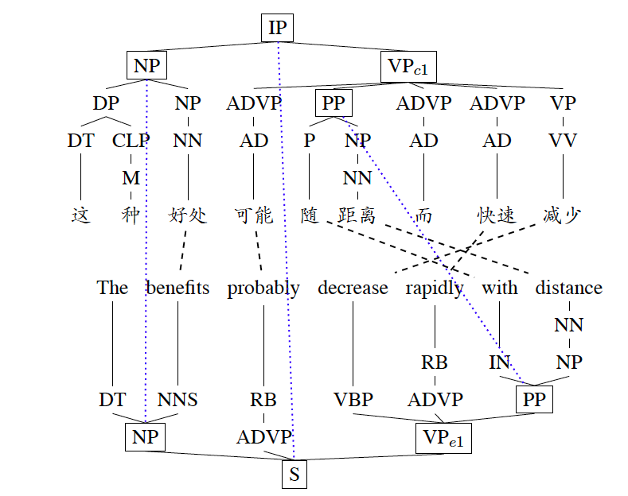

Current Projects
- HACEPT
- Syntax-pragmatics interface
- ... Classical Chinese....
Put brief introduction here. Hierarchical alignment of chinese english parse tree is a cool machine translation project... See an example given on the right.
Some description of the idea. Ba is a sentence final particle that encodes certain illocutionary force. Ba and its kins are interesting...
...Pi zhi bu cun, mao jiang yan fu....

Downloadable Papers & Handouts
Dissertation
My dissertation, titled as xxx, is about ... two sentence introduction of the dissertation...
The full dissertation can be downloaded here; for overview, please checkout the handout for defend
Theoretical Linguistics
- Deng, Dun and Nianwen Xue 2014. Title of the Paper Proceedings of COLING. bibtex
- Deng, Dun and Nianwen Xue 2014. Title of the Paper Proceedings of COLING. bibtex
- Deng, Dun and Nianwen Xue 2014. Title of the Paper Proceedings of COLING. bibtex
Computational Linguistics
- Deng, Dun and Nianwen Xue. 2014. Building a hierarchically aligned Chinese English parallel Treebank. In Proceedings of COLING 2014,the 25th International Conference on Computational Linguistics: Technical papers, pages 1151-1520, Dublin, Ireland, August 23-29. bibtex
- Deng, Dun and Nianwen Xue 2014. Title of the Paper Proceedings of COLING. bibtex
- Deng, Dun and Nianwen Xue 2014. Title of the Paper Proceedings of COLING. bibtex
Classical Chinese
- Deng, Dun and Nianwen Xue 2014. Title of the Paper Proceedings of COLING. bibtex
- Deng, Dun and Nianwen Xue 2014. Title of the Paper Proceedings of COLING. bibtex
- Deng, Dun and Nianwen Xue 2014. Title of the Paper Proceedings of COLING. bibtex